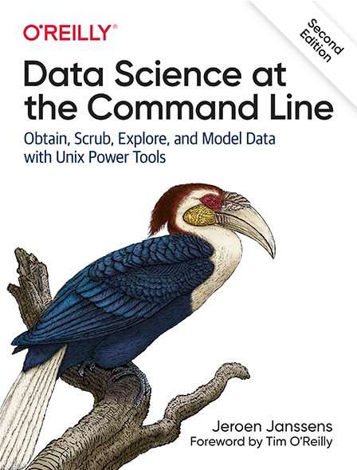

Data Science at the Command Line, 2e
Obtain, Scrub, Explore, and Model Data with Unix Power Tools
Welcome

Welcome to the website of the second edition of Data Science at the Command Line by Jeroen Janssens, published by O’Reilly Media in October 2021. This website is free to use. The contents is licensed under the Creative Commons Attribution-NonCommercial-NoDerivatives 4.0 International License. You can order a physical copy at Amazon.
This website is edition 2.5 and was last updated on November 10, 2026. The text is that of the second edition, with small updates where tools or websites have changed since 2021. All the code has been run again with the current version of the Docker image, so the output you see here is the output you get when you follow along today. The website is now made with Quarto and quarto-term instead of bookdown. The printed book shows the output of the original Docker image, which is still available as datasciencetoolbox/dsatcl2e:20210628.
Description
This thoroughly revised guide demonstrates how the flexibility of the command line can help you become a more efficient and productive data scientist. You’ll learn how to combine small yet powerful command-line tools to quickly obtain, scrub, explore, and model your data. To get you started, author Jeroen Janssens provides a Docker image packed with over 100 Unix power tools—useful whether you work with Windows, macOS, or Linux.
You’ll quickly discover why the command line is an agile, scalable, and extensible technology. Even if you’re comfortable processing data with Python or R, you’ll learn how to greatly improve your data science workflow by leveraging the command line’s power. This book is ideal for data scientists, analysts, engineers, system administrators, and researchers.
- Obtain data from websites, APIs, databases, and spreadsheets
- Perform scrub operations on text, CSV, HTML, XML, and JSON files
- Explore data, compute descriptive statistics, and create visualizations
- Manage your data science workflow
- Create your own tools from one-liners and existing Python or R code
- Parallelize and distribute data-intensive pipelines
- Model data with dimensionality reduction, regression, and classification algorithms
- Leverage the command line from Python, Jupyter, R, RStudio, and Apache Spark
If you find this book helpful, consider spreading the word! You could, for instance, share it on Twitter, write a review on Amazon, or star the Github repository. Much appreciated!
Praise
Traditional computer and data science curricula all too often mistake the command line as an obsolete relic instead of teaching it as the modern and vital toolset that it is. Only well into my career did I come to grasp the elegance and power of the command line for easily exploring messy datasets and even creating reproducible data pipelines for work. The first edition of Data Science at the Command Line was one of the most comprehensive and clear references when I was a novice in the art, and now with the second edition, I’m again learning new tools and applications from it.
Dan Nguyen, data scientist, former news application developer at ProPublica, and former Lorry I. Lokey Visiting Professor in Professional Journalism at Stanford University
The Unix philosophy of simple tools, each doing one job well, then cleverly piped together, is embodied by the command line. Jeroen expertly discusses how to bring that philosophy into your work in data science, illustrating how the command line is not only the world of file input/output, but also the world of data manipulation, exploration, and even modeling.
Chris H. Wiggins, associate professor in the department of applied physics and applied mathematics at Columbia University, and chief data scientist at The New York Times
This book explains how to integrate common data science tasks into a coherent workflow. It’s not just about tactics for breaking down problems, it’s also about strategies for assembling the pieces of the solution.
John D. Cook, consultant in applied mathematics, statistics, and technical computing
Despite what you may hear, most practical data science is still focused on interesting visualizations and insights derived from flat files. Jeroen’s book leans into this reality, and helps reduce complexity for data practitioners by showing how time-tested command-line tools can be repurposed for data science.
Paige Bailey, principal product manager code intelligence at Microsoft, GitHub
It’s amazing how fast so much data work can be performed at the command line before ever pulling the data into R, Python, or a database. Older technologies like sed and awk are still incredibly powerful and versatile. Until I read Data Science at the Command Line, I had only heard of these tools but never saw their full power. Thanks to Jeroen, it’s like I now have a secret weapon for working with large data.
Jared Lander, chief data scientist at Lander Analytics, organizer of the New York Open Statistical Programming Meetup, and author of R for Everyone
The command line is an essential tool in every data scientist’s toolbox, and knowing it well makes it easy to translate questions you have of your data to real-time insights. Jeroen not only explains the basic Unix philosophy of how to chain together single-purpose tools to arrive at simple solutions for complex problems, but also introduces new command-line tools for data cleaning, analysis, visualization, and modeling.
Jake Hofman, senior principal researcher at Microsoft Research, and adjunct assistant professor in the department of applied mathematics at Columbia University
Dedication
Once again to my wife, Esther. Without her continued encouragement, support,
and patience, this second edition would surely have ended up in /dev/null.
Colophon
The animal on the cover of Data Science at the Command Line is a wreathed hornbill (Rhytidoceros undulatus). Also known as the bar-pouched wreathed hornbill, the species is found in forests in mainland Southeast Asia and in northeastern India and Bhutan. Hornbills are named for the casques that form on the upper part of the birds’ bills. No single obvious purpose exists for these hollow, keratizined structures, but they may serve as a means of recognition between members of the species, as an amplifier for the birds’ calls, or—because males often exhibit larger casques than females of the species—for gender recognition. Wreathed hornbills can be distinguished from plain-pouched hornbills, to whom they are closely related and otherwise similar in appearance, by a dark bar on the lower part of the wreathed hornbills’ throats.
Wreathed hornbills roost in flocks of up to four hundred but mate in monogamous, lifelong partnerships. With help from the males, females seal themselves up in tree cavities behind dung and mud to lay eggs and brood. Through a slit large enough for his beak alone, the male feeds his mate and their young for up to four months. A diet of animal prey becomes predominantly fruit when females and their young leave the nest. Hornbill couples have been known to return to the same nest for as many as nine years.
Many of the animals on O’Reilly covers are endangered; all of them are important to the world.
The color illustration is by Karen Montgomery, based on a black and white engraving from Braukhaus’s Lexicon. The cover fonts are Gilroy Semibold and Guardian Sans. The text and heading font is Source Sans Pro and the code font is Fira Mono.